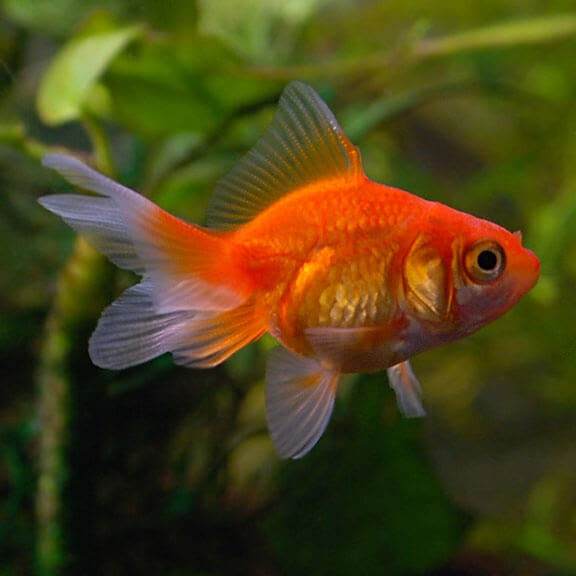

금붕어
기본 정보
- 학명: Carassius auratus
- 영문명: Goldfish
- 분류: 잉어과 (Cyprinidae)
- 원산지: 중국
- 크기: 평균 10~20cm (품종에 따라 최대 30cm 이상 가능)
- 수명: 평균 5~10년 (최대 20년 이상)
사육 정보
- 적정 수온: 18~24℃ (냉수어)
- pH: 6.5~7.5
- 경도: 중간 (5~12 dGH)
- 수조 크기: 최소 40L 이상 (1마리 기준), 크면 클수록 좋음
- 수질 민감도: 비교적 강한 편이지만, 깨끗한 물을 선호
- 활동 영역: 중상층
- 먹이: 잡식성 (플레이크, 펠렛, 야채류, 냉동 먹이 등)
품종
수 세기에 걸쳐 이루어진 품종개량으로 다양한 색의 금붕어가 나타났으며, 몇몇 금붕어는 금색과는 전혀 다른 색깔을 갖고 있기도 하다. 몸체와 지느러미, 눈 모양이 다르기도 하며 몇몇 종은 수족관에서만 살 수 있고 야생에 가까운 원종(原種) 및 그와 비슷한 종보다 생명력이 떨어지기도 한다. 오늘날 중화인민공화국에서는 300여 종을 인정하고 있으며 대부분의 금붕어들은 중국이 원산지이다.
사육
금붕어는 세계에서 가장 많은 품종이 사육되고 있으며 작은 어항에서 사육하면 수명은 10년, 몸길이는 5cm까지 자란다. 어항이 크고 환경이 양호하다면 30년 이상 살고 몸길이가 30cm까지 자란다. 새끼금붕어는 검은빛을 띠다가 성장함에 따라 어미와 똑같은 빛깔과 무늬가 나타나기 시작한다. 물의 온도가 13 °C 이하가 되는 겨울에는 어항이나 연못 바닥에 가만히 움직이지 않고 있다. 이 동안에는 먹이도 먹지 않는다. 그러다가 봄이 되면 다시 활동을 시작하면서 알도 낳는다. 수족관 등에서 파는 금붕어는 양어장에서 치어를 6개월 이상 키운 뒤 시장에 출하한 것이다. 금붕어는 사료를 주어서 키우지만, 장구벌레, 물벼룩등도 잡아먹는다.